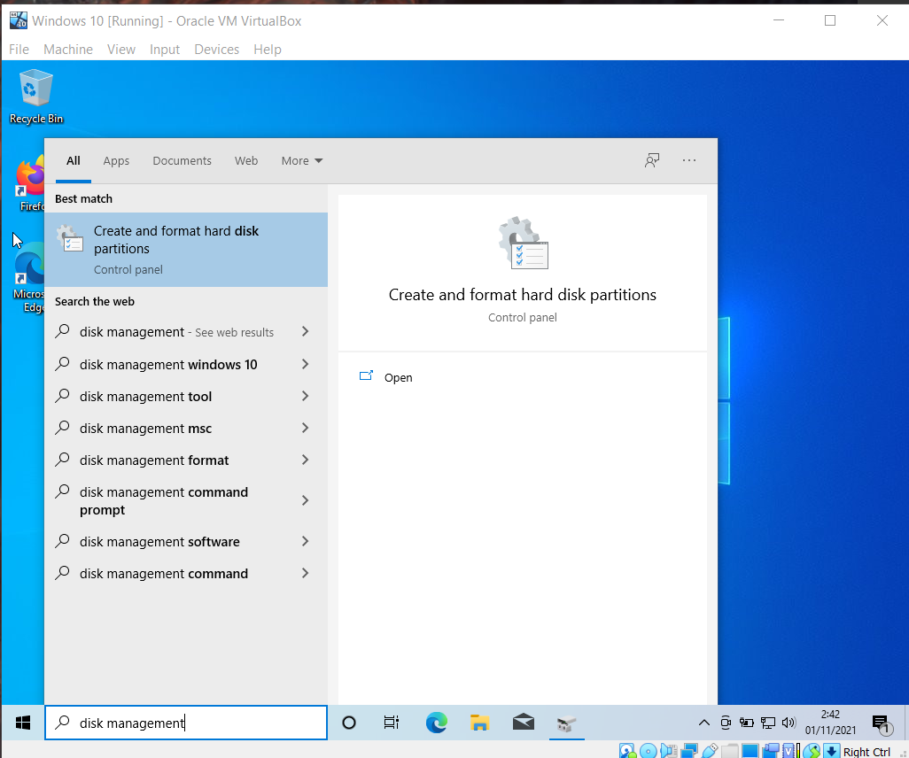
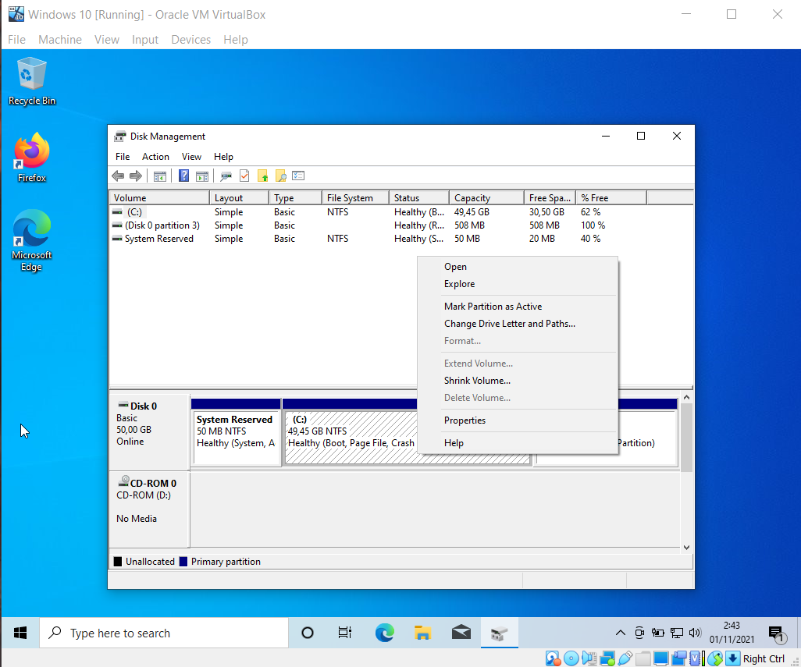
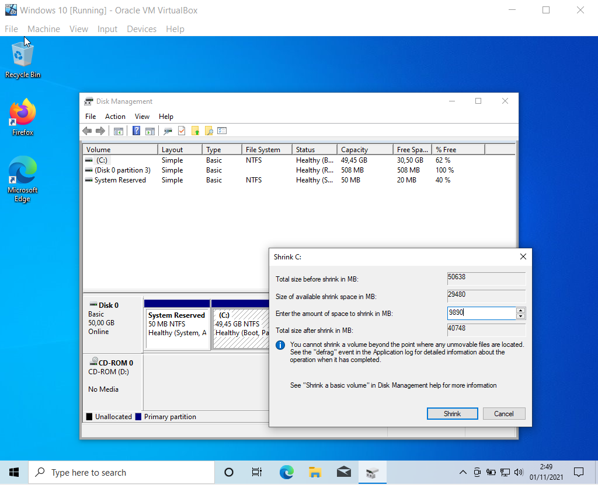
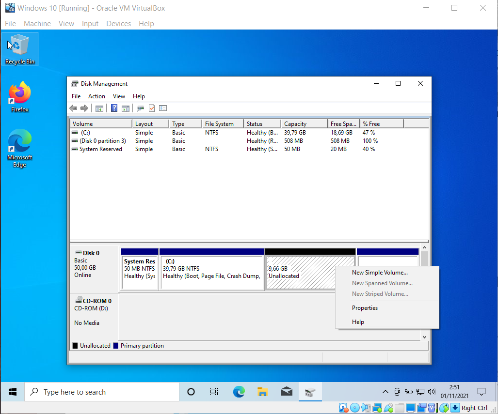
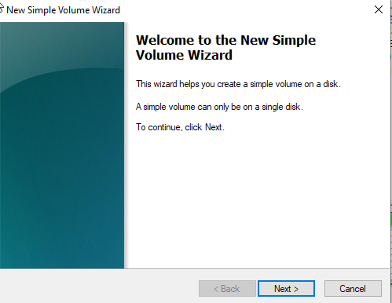
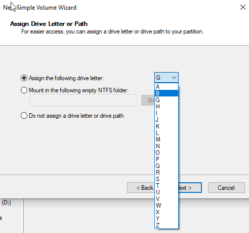
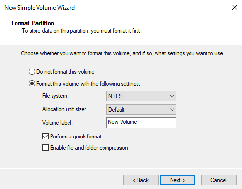
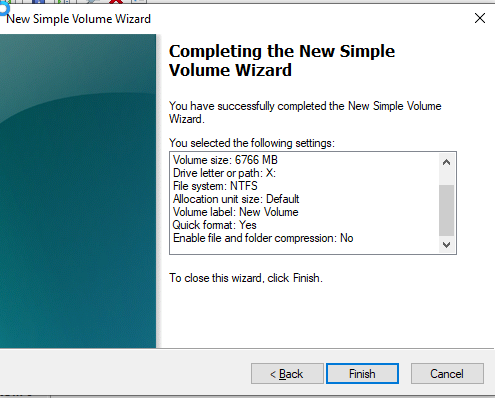

Partisi pada windows ada 2 yaitu MBR dan GPT.
Master Boot Record (MBR) adalah arsitektur partisi hardisk yang tugasnya memegang informasi tentang file sistem, logical partition dan pengaturan sistem. MBR adalah tipe spesial boot sector, MBR memiliki code untuk meluncurkan OS. Pada saat booting, partisi MBR akan mencari lokasi boot sector berada. Boot sector ini berisi file dan informasi yang diperlukan sistem untuk proses booting dari startup sampai finish ke tampilan desktop.
GUID Partition Table (GPT) adalah arsitektur partisi generasi terbaru. GPT merupakan teknologi yang ada pada UEFI BIOS generasi terbaru. Komputer/laptop yang menggunakan partisi GPT harus menggunakan UEFI. Partisi GPT ini adalah standar baru yang perlahan akan menggantikan MBR. GPT memiliki lebih banyak keunggulan dan menutupi kekurangan yang ada pada MBR. GPT sudah dikembangkan sejak tahun 1990-an Tetapi mulai banyak digunakan setelah kemunculan windows 8.
Pada blog ini kita akan membahas cara membagi disk pada komputer kita.
Langkah-langkah partisi
Kita menggunakan software windows 10 "disk management".
Lalu klik kanan disk yang ingin dibagi, dan pilih “shrink volume”
Lalu kita masukan berapa ukuran yang ingin di potong.
Klik kanan drive yang kita potong tadi, lalu pilih “new simple volume” untuk memberikan volume baru pada disk unallocated tersebut.
Click next.
Lalu kita pilih drive letternya.
Lalu kita format dan memilih tipe file systemnya.
Setelah selesai click finish.
